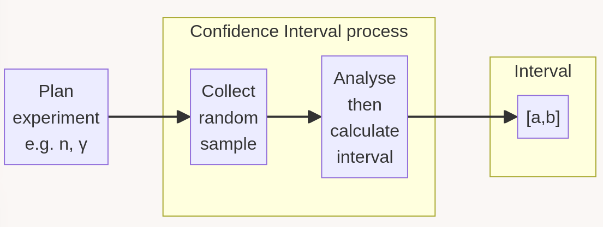
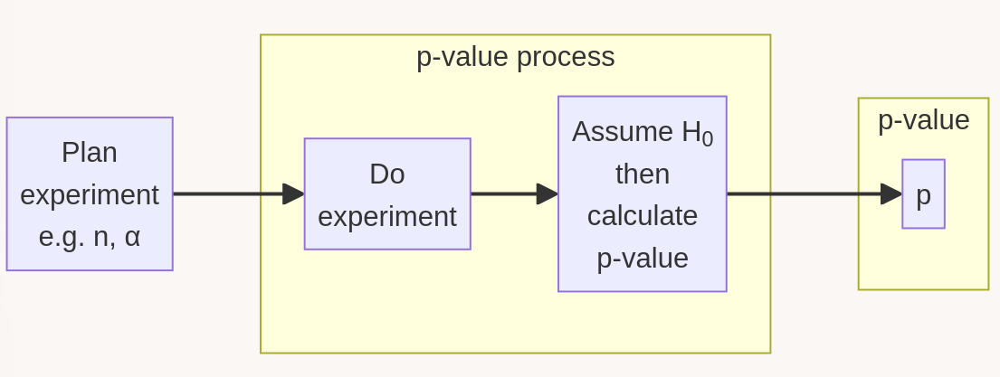

flowchart LR A[Plan \n experiment\n e.g. n, γ] --> B subgraph proc [Confidence Interval process] B[Collect \n random \n sample] --> C[Analyse \n then \n calculate \n interval] end subgraph output [Interval] C --> D["[a,b]"] end
Confidence intervals
and
\(p\)-values
August 22, 2024
We’re going to collect some data to estimate some unknown population parameter.
Informal Definition
A confidence interval is an interval, like \([5.5,6.2]\) or \([1.43,2.34]\), created by a statistical process, it has an associated proportion / confidence level, typically we use \(95\%\) or \(99\%\).
The process of generating the interval is designed to have a specific property:
Our target proportion of the time… the interval we generate contains the true unknown population parameter we want to estimate.
Let’s use \(\theta\) for our parameter of interest, and \(\gamma\) for our confidence level.
Let’s also call our data \(X\), and our interval \(I\).
Consider \(\theta\) the proportion of all first-year Strathclyde students who have been to Spain.
We plan to ask a random sample of \(n=30\) of such students if they have been to Spain. We will record their responses and keep the sufficient statistic \(\bar{x} = \frac{1}{n}\sum_1^n x_i\) where \(x_i=1\) if they have, and \(0\) if they haven’t.
We also select \(\gamma=0.95\), i.e. a \(95\%\) confidence interval as our target.
We create our interval using the collected our data, \(\textbf{x}\) and calculated \(\bar{x}\). However, the possible interval is considered random, until we collect our data. We want our (random) interval creation process to satisfy
\[ \mathbb{P}(\text{interval }I \text{ contains } \theta) = 0.95. \]
It’s the process of generating an interval (by collecting new random data) which has a \(95\%\) chance to creating an interval which contains the static true \(\theta\).

95% of the time this central process spits out an interval which contains the true \(\theta\).
flowchart LR A[Plan \n experiment\n e.g. n, γ] --> B subgraph proc [Confidence Interval process] B[Collect \n random \n sample] --> C[Analyse \n then \n calculate \n interval] end subgraph output [Interval] C --> D["[a,b]"] end
[0.087752, 0.445648]
[0.021052, 0.378948]
[0.121052, 0.478948]
[0.321052, 0.678948]
[0.121052, 0.478948]
[0.054352, 0.412248]
[0.021052, 0.378948]
[0.154352, 0.512248]
[0.054352, 0.412248]\(\theta\) is not known
\(\theta\) is fixed but unknown to you, we are not attaching probabilities to possible values of \(\theta\).
Confusingly we’re not even saying a particular specific interval has a ‘probability of containing \(\theta\)’.
Better than a point estimate for \(\theta\)
Before now our simplest way to estimate \(\theta\) was via an unbiased estimator.
A friend says they surveyed some students and now predicts that \(60\%\) of all students have been to Spain. What can you learn?
At \(95\%\) our confidence interval for \(\theta\) is
\[ [8.78\%, 44.56\%]. \]
Question 1
Is a wider or a narrower Confidence Interval (CI) better?
Question 2
Suppose you design a procedure to create a \(95\%\) CI.
How would your output differ if I now asked for a \(98\%\) CI?
*Question 3
What if we change our plan, and instead conduct a larger sample, i.e. a larger \(n\)?
(e.g. in our Spain example)
We calculate a \(p\)-value in the realm of hypothesis testing, something we have touched on before.
We have theories about a model parameter(s).
Typically this includes some boring/default possibility, called a null hypothesis (\(H_0\)) which says something concrete and specific about the parameter, like \(\theta=0\) or \(\theta=0.5\), or in a more complex situation that two population’s means are the same, so \(\mu_1=\mu_2\).
Informal Definition
A \(p\)-value is a calculated probability.
First assume the null hypothesis about \(\theta\) is true… then calculate the probability of seeing either the observed data/statistic or seeing something more surprising.
Critically, we’re assuming the null hypothesis about \(\theta\) is true.

Assuming \(H_0\) this central process spits out a value drawn from a random variable, \(P\).
(Typically \(P\) is actually Uniform\([0,1]\).)
Interpret!
flowchart LR A[Plan experimente.g. n, α ] –> B subgraph proc [p-value process] B[Do experiment] –> C[Analyse then calculate p-value] end subgraph output [p-value] C –> D[p] end
One informal interpretation of the \(p\)-value is as a measure of surprise of getting the result we did, assuming \(H_0\) is true. More formally…
Always pick a significance level \(\alpha\) first
It is important to set a significance level \(\alpha\), e.g. \(\alpha=5\%=0.05\) before conducting the experiment. Your \(p\)-value is then compared to this \(\alpha\).
If probability \(p\) is lower than \(\alpha\), we say there is significant evidence to reject our null hypothesis.
Always assuming \(H_0\)
Any statements you make are in this context.
You are not trying to calculate the probability of this, or some other hypothesis being true. Just looking for evidence against \(H_0\).
My friend claims to have mild magic powers. They claim to be able to correctly guess with better than random luck the results of tossing a fair coin, one at a time. So I planned an experiment, I would toss a coin \(20\) times and count how many of the tosses they could correctly predict.
I set a target significance level \(\alpha=0.05=5\%\) for my surprise/significance threshold.
They actually got \(16\) out of \(20\) tosses correct!
My \(H_0\) was that they had no psychic abilities, and so assuming \(H_0\) each guess would be 50/50 correct. So, with my knowledge of Binomial probabilities, assuming this \(H_0\)
\[
\mathbb{P}_{H_0}(\text{correct}(X) \geq 16) = \mathbb{P}(16, 17, 18, 19 \text{ or }20 \text{ correct}) = 0.005909
\] e.g. via 1-pbinom(15, 20, 0.5) in R.
The \(p\)-value was 0.005909, i.e. around \(0.6\%\) which is definitely much lower than my significance level of \(\alpha=5\%\), so I conclude that there is strong evidence to reject the null hypothesis that my friend has no such psychic abilities.
Looking more carefully we can identify:
In this case
\[ A = \{0,1,2,\ldots,14\} \qquad \text{and} \qquad C = \{15,16,\ldots,20\}. \]
There are a number of dangers of using \(p\)-values, today I will highlight just one…
I lied to you, a little…
Warning
My psychic friend actually made me repeat the experiment until they got a good score, their score of \(16\) was actually the \(52\)nd experiment!
Are we still impressed?
Question 1
A 40-year old man from Stirling won the lottery last week.
Is that surprising?
Question 2
Is a \(p\)-value of \(0.2\) ten times more likely to occur than a \(p\) value of \(0.02\)?
Question 3
Suppose I test a class of \(20\) students for psychic skills. Everyone individually guesses 20 coin toss results, sequentially. Can I use a \(p\)-value to test if psychic skills exist in any individuals in my class?
I don’t like to discuss their relationship too soon after introducing these two concepts.
A number of common misunderstandings that can arise with these ideas come from confusing concepts between them, so I recommend trying to keep the ideas themselves separate while you’re mastering the concepts. So first, we shall stress their contrasts:
Confidence Intervals
There is a fixed but unknown parameter (e.g. \(\theta\)). We are trying to create an interval which contains \(\theta\) using some data samples.
\(p\)-values
We collect some data, then we assume a particular fixed \(\theta\) value drawn from our null hypothesis. Then we perform a calculation of the likelihood of seeing this result (or a more extreme one, with respect to our hypotheses).
Yes, it turns out that if we use \(\gamma=95\%\) and \(\alpha=5\%\) (or generally \(\gamma=1-\alpha\)) then (typically)
This is quite difficult to grasp if we’ve only just introduced these two topics, so it’s perhaps best to revisit when you’re more comfortable with the topics separately.
You will get opportunities to see this occurring, practically, in homework questions.
CIs and \(p\)-values